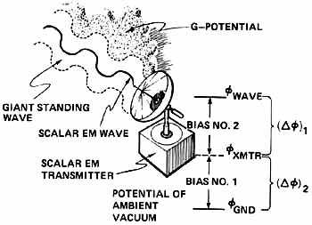
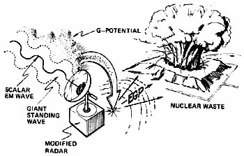
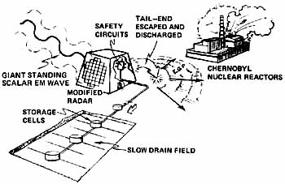

| The Tom Bearden Website
|
|

Figure 7. Bottled up energy in a standing scalar EM wave is a potential.

Figure 8. EGP short-out. Transmitter failure and consequent discharge of a giant standing scalar EM wave potential caused the explosion of stored nuclear wastes at Kyshtym, USSR, in the winter of 1957-58.

Figure 9. EGP initiation of the Chernobyl event. Failure of another giant transmitter near Chernobyl in 1986 eventually caused the eruption of one of the Chernobyl reactors by EGP-pulsing its nuclear fuel rods. When the transmitter failed, the alarmed Soviets shut down the four Chernobyl reactors while waiting for drain-off of the EGP potential by the safety circuits of the disabled transmitter. These circuits finally gave way, producing a mild EGP pulse into the earth. Had they failed immediately, all four reactors at Chernobyl would have violently exploded.
Note: a full explanation of Tom Bearden's involvement in the Chernobyl disaster is recounted in his latest book "Fer de Lance", 2nd Edition, which can be ordered from this website. Also check out the First Edition of "Fer de Lance."